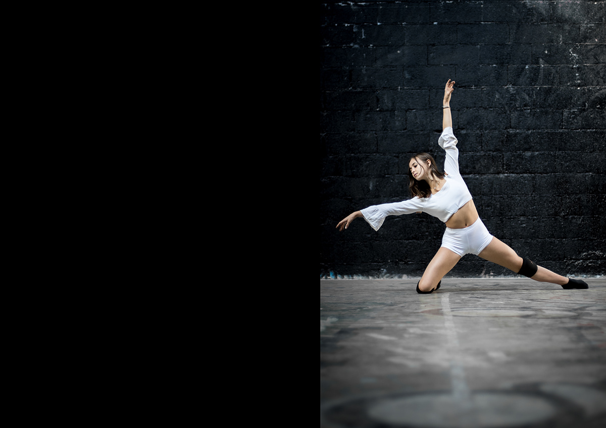
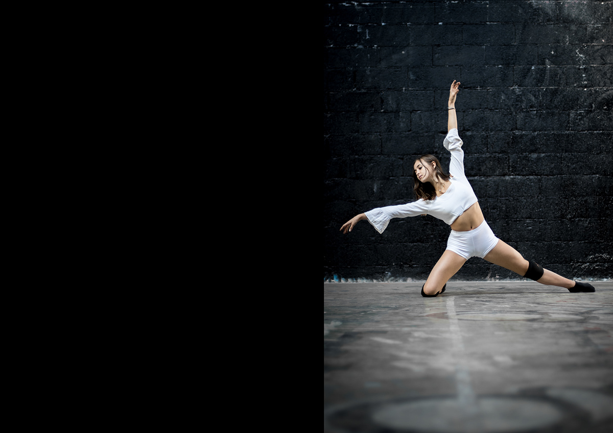

À propos
Bonjour !
Je m’appelle Léontine, j’habite Paris et j’étudie actuellement en DSAA Design et création numérique à l’école Estienne. J’ai un profil interdisciplinaire et aime tout particulièrement travailler à l’intersection entre le monde virtuel et le monde physique.
Captivée non seulement par l’immatérialité de l'espace numérique, mais également par la beauté naturelle et tactile de la matière physique, j’aime créer des ponts entre des domaines à première vue divergents. Je m’intéresse particulièrement aux liens entre les nouvelles technologies, l’environnement naturel et la sensibilité humaine, qui a été une grande partie de nos réflexions au cours de notre collection de mémoires « Espaces transitoires ».
Convaincue de l’influence que le design peut prendre quant à la construction d’un avenir positif et soutenable, j’attache une grande importance aux enjeux futur des nouvelles technologies ainsi qu’à leurs conséquences au regard du mode de présence au monde de l’être humain. Que cela soit par le biais de projets collaboratifs, d'installations, de réflexion sur ses pratiques ou encore par sa portée documentaire et de médiation.


 
